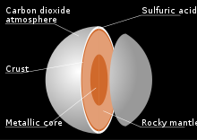

Venus is the second planet from the Sun. It is a rocky planet with the densest atmosphere of all the rocky bodies in the Solar System, and the only one with a mass and size that is close to that of its orbital neighbour Earth. Orbiting inferiorly (inside of Earth's orbit), it appears in Earth's sky always close to the Sun, as either a "morning star" or an "evening star". While this is also true for Mercury, Venus appears much more prominently, since it is the third brightest object in Earth's sky after the Moon and the Sun,[20][21] appearing brighter than any other star-like classical planet or any fixed star. With such prominence in Earth's sky, Venus has historically been a common and important object for humans, in both their cultures and astronomy.
Venus has a rotation which has been slowed and turned against its orbital direction (retrograde) by the strong currents and drag of its atmosphere. This rotation produces, together with the time of 224.7 Earth days it takes Venus to complete an orbit around the Sun (a Venusian solar year), a Venusian solar day length of 117 Earth days, resulting in a Venusian year being just under two Venusian days long. The orbits of Venus and Earth are the closest between any two Solar System planets, approaching each other in synodic periods of 1.6 years. While this allows them to come closer to each other at inferior conjunction than any other pair of Solar System planets, Mercury stays on average closer to them and any other planet, as Mercury is the most central planet and passes by most frequently.[28] That said, Venus and Earth between them have the lowest difference in gravitational potential of any pair of Solar System planets. This has allowed Venus to be the most accessible destination and attractive gravity assist waypoint for interplanetary flights.
Physical characteristics
Venus is one of the four terrestrial planets in the Solar System, meaning that it is a rocky body like Earth. It is similar to Earth in size and mass and is often described as Earth's "sister" or "twin".[31] Venus is close to spherical due to its slow rotation.[32] Venus has a diameter of 12,103.6 km (7,520.8 mi)—only 638.4 km (396.7 mi) less than Earth's—and its mass is 81.5% of Earth's. Conditions on the Venusian surface differ radically from those on Earth because its dense atmosphere is 96.5% carbon dioxide, with most of the remaining 3.5% being nitrogen.[33] The surface pressure is 9.3 megapascals (93 bars), and the average surface temperature is 737 K (464 °C; 867 °F), above the critical points of both major constituents and making the surface atmosphere a supercritical fluid out of mainly supercritical carbon dioxide and some supercritical nitrogen.
Internal structure
Without data from reflection seismology or knowledge of its moment of inertia, little direct information is available about the internal structure and geochemistry of Venus.[123] The similarity in size and density between Venus and Earth suggests they share a similar internal structure: a core, mantle, and crust. Like that of Earth, the Venusian core is most likely at least partially liquid because the two planets have been cooling at about the same rate,[124] although a completely solid core cannot be ruled out.[125] The slightly smaller size of Venus means pressures are 24% lower in its deep interior than Earth's.[126] The predicted values for the moment of inertia based on planetary models suggest a core radius of 2,900–3,450 km.[125] This is in line with the first observation-based estimate of 3,500 km.[127]
The principal difference between the two planets is the lack of evidence for plate tectonics on Venus, possibly because its crust is too strong to subduct without water to make it less viscous. This results in reduced heat loss from the planet, preventing it from cooling and providing a likely explanation for its lack of an internally generated magnetic field.[128] Instead, Venus may lose its internal heat in periodic major resurfacing events.

Atmosphere
Venus has a dense atmosphere composed of 96.5% carbon dioxide, 3.5% nitrogen—both exist as supercritical fluids at the planet's surface with a 6.5% density of water[34]—and traces of other gases including sulfur dioxide.[35] The mass of its atmosphere is 92 times that of Earth's, whereas the pressure at its surface is about 93 times that at Earth's—a pressure equivalent to that at a depth of nearly 1 km (5⁄8 mi) under Earth's ocean surfaces. The density at the surface is 65 kg/m3 (4.1 lb/cu ft), 6.5% that of water[34] or 50 times as dense as Earth's atmosphere at 293 K (20 °C; 68 °F) at sea level. The CO2-rich atmosphere generates the strongest greenhouse effect in the Solar System, creating surface temperatures of at least 735 K (462 °C; 864 °F).[36][37] This makes the Venusian surface hotter than Mercury's, which has a minimum surface temperature of 53 K (−220 °C; −364 °F) and maximum surface temperature of 700 K (427 °C; 801 °F),[38][39] even though Venus is nearly twice Mercury's distance from the Sun and thus receives only 25% of Mercury's solar irradiance. Because of its runaway greenhouse effect, Venus has been identified by scientists such as Carl Sagan as a warning and research object linked to climate change on Earth.[29][30]
Temperature
Maximum 900 °F (482 °C)
Normal 847 °F (453 °C)
Minimum 820 °F (438 °C)
Venus's atmosphere is rich in primordial noble gases compared to that of Earth.[41] This enrichment indicates an early divergence from Earth in evolution. An unusually large comet impact[42] or accretion of a more massive primary atmosphere from solar nebula[43] have been proposed to explain the enrichment. However, the atmosphere is depleted of radiogenic argon, a proxy for mantle degassing, suggesting an early shutdown of major magmatism.[44][45]
Studies have suggested that billions of years ago, Venus's atmosphere could have been much more like the one surrounding the early Earth, and that there may have been substantial quantities of liquid water on the surface.[46][47][48] After a period of 600 million to several billion years,[49] solar forcing from rising luminosity of the Sun and possibly large volcanic resurfacing caused the evaporation of the original water and the current atmosphere.[50] A runaway greenhouse effect was created once a critical level of greenhouse gases (including water) was added to its atmosphere.[51] Although the surface conditions on Venus are no longer hospitable to any Earth-like life that may have formed before this event, there is speculation on the possibility that life exists in the upper cloud layers of Venus, 50 km (30 mi) up from the surface, where the atmospheric conditions are the most Earth-like in the Solar System,[52] with temperatures ranging between 303 and 353 K (30 and 80 °C; 86 and 176 °F), and the pressure and radiation being about the same as at Earth's surface, but with acidic clouds and the carbon dioxide air.[53][54][55] The putative detection of an absorption line of phosphine in Venus's atmosphere, with no known pathway for abiotic production, led to speculation in September 2020 that there could be extant life currently present in the atmosphere.[56][57] Later research attributed the spectroscopic signal that was interpreted as phosphine to sulfur dioxide,[58] or found that in fact there was no absorption line.[59][60]
Types of cloud layers, as well as temperature and pressure change by altitude in the atmosphere
Thermal inertia and the transfer of heat by winds in the lower atmosphere mean that the temperature of Venus's surface does not vary significantly between the planet's two hemispheres, those facing and not facing the Sun, despite Venus's slow rotation. Winds at the surface are slow, moving at a few kilometres per hour, but because of the high density of the atmosphere at the surface, they exert a significant amount of force against obstructions, and transport dust and small stones across the surface. This alone would make it difficult for a human to walk through, even without the heat, pressure, and lack of oxygen
Phases
As it orbits the Sun, Venus displays phases like those of the Moon in a telescopic view. The planet appears as a small and "full" disc when it is on the opposite side of the Sun (at superior conjunction). Venus shows a larger disc and "quarter phase" at its maximum elongations from the Sun, and appears at its brightest in the night sky. The planet presents a much larger thin "crescent" in telescopic views as it passes along the near side between Earth and the Sun. Venus displays its largest size and "new phase" when it is between Earth and the Sun (at inferior conjunction). Its atmosphere is visible through telescopes by the halo of sunlight refracted around it.[174] The phases are clearly visible in a 4" telescope.[citation needed] Although naked eye visibility of Venus's phases is disputed, records exist of observations of its crescent

Orbit and rotation
Venus orbits the Sun at an average distance of about 0.72 AU (108 million km; 67 million mi), and completes an orbit every 224.7 days. Although all planetary orbits are elliptical, Venus's orbit is currently the closest to circular, with an eccentricity of less than 0.01.[4] Simulations of the early solar system orbital dynamics have shown that the eccentricity of the Venus orbit may have been substantially larger in the past, reaching values as high as 0.31 and possibly impacting early climate evolution.[141]
Venus and its rotation in respect to its revolution.
All planets in the Solar System orbit the Sun in an anticlockwise direction as viewed from above Earth's north pole. Most planets rotate on their axes in an anticlockwise direction, but Venus rotates clockwise in retrograde rotation once every 243 Earth days—the slowest rotation of any planet. This Venusian sidereal day lasts therefore longer than a Venusian year (243 versus 224.7 Earth days). Slowed by its strong atmospheric current the length of the day also fluctuates by up to 20 minutes.[142] Venus's equator rotates at 6.52 km/h (4.05 mph), whereas Earth's rotates at 1,674.4 km/h (1,040.4 mph).[note 2][146] Venus's rotation period measured with Magellan spacecraft data over a 500-day period is smaller than the rotation period measured during the 16-year period between the Magellan spacecraft and Venus Express visits, with a difference of about 6.5 minutes.[147] Because of the retrograde rotation, the length of a solar day on Venus is significantly shorter than the sidereal day, at 116.75 Earth days (making the Venusian solar day shorter than Mercury's 176 Earth days — the 116-day figure is close to the average number of days it takes Mercury to slip underneath the Earth in its orbit).[11] One Venusian year is about 1.92 Venusian solar days.[148] To an observer on the surface of Venus, the Sun would rise in the west and set in the east,[148] although Venus's opaque clouds prevent observing the Sun from the planet's surface.[149]
Venus may have formed from the solar nebula with a different rotation period and obliquity, reaching its current state because of chaotic spin changes caused by planetary perturbations and tidal effects on its dense atmosphere, a change that would have occurred over the course of billions of years. The rotation period of Venus may represent an equilibrium state between tidal locking to the Sun's gravitation, which tends to slow rotation, and an atmospheric tide created by solar heating of the thick Venusian atmosphere.[150][151] The 584-day average interval between successive close approaches to Earth is almost exactly equal to 5 Venusian solar days (5.001444 to be precise),[152] but the hypothesis of a spin-orbit resonance with Earth has been discounted.[153]
Venus has no natural satellites.[154] It has several trojan asteroids: the quasi-satellite 2002 VE68[155][156] and two other temporary trojans, 2001 CK32 and 2012 XE133.[157] In the 17th century, Giovanni Cassini reported a moon orbiting Venus, which was named Neith and numerous sightings were reported over the following 200 years, but most were determined to be stars in the vicinity. Alex Alemi's and David Stevenson's 2006 study of models of the early Solar System at the California Institute of Technology shows Venus likely had at least one moon created by a huge impact event billions of years ago.[158] About 10 million years later, according to the study, another impact reversed the planet's spin direction and the resulting tidal deceleration caused the Venusian moon gradually to spiral inward until it collided with Venus.[159] If later impacts created moons, these were removed in the same way. An alternative explanation for the lack of satellites is the effect of strong solar tides, which can destabilize large satellites orbiting the inner terrestrial planets